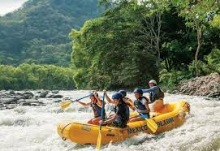

Trekking en el Himalaya: Para los amantes de la montaña, el trekking en el Himalaya ofrece vistas espectaculares de picos nevados y la oportunidad de sumergirse en la cultura local de Nepal y Bután. Buceo en la Gran Barrera de Coral: En Australia, la Gran Barrera de Coral es un paraíso submarino para los entusiastas del buceo, con una biodiversidad marina única y coloridos arrecifes de coral. Safaris en África: Los safaris en países como Kenia, Tanzania, Sudáfrica y Botswana permiten observar de cerca la vida salvaje, incluidos leones, elefantes y jirafas, en su hábitat natural.
